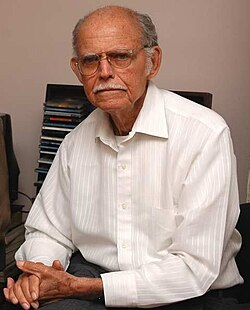

Huber Matos
Huber Matos | |
|---|---|
 Matos in 2011 | |
| Born | 26 November 1918 |
| Died | 27 February 2014 (aged 95) Miami, Florida, U.S. |
| Occupations | Political leader, writer |
| Known for | Comandante, Cuban Revolution |
Political party | 26 July Movement Partido Ortodoxo |

Huber Matos Benítez (26 November 1918 – 27 February 2014) was a Cuban rebel, political dissident, activist, and writer. He opposed the dictatorship of Fulgencio Batista from its inception in 1952 and fought alongside Fidel Castro, Raúl Castro, Che Guevara, Camilo Cienfuegos and other members of the 26th of July Movement to overthrow it. Following the success of the Cuban Revolution that brought Fidel Castro to power, he criticized the regime's shift in favor of Marxist principles and ties to the Popular Socialist Party (PSP). Convicted of treason and sedition by the revolutionary government, he spent 20 years in prison (1959–1979) before being released in 1979. He then divided his time between Miami, Florida, and Costa Rica while continuing to protest the policies of the Cuban government.
Early life
[edit]Matos was born in Yara, in Oriente Province (currently Granma Province).
He became a school teacher in Manzanillo, while also owning a small rice plantation. He earned a doctorate from the University of Havana in 1944.[1] He joined the Cuban nationalist party, Partido Ortodoxo.
Revolutionary activity
[edit]
Following Batista's coup of 10 March 1952, Matos became involved with the resistance movement. He moved to Costa Rica for several years, maintaining contact with the M-26-7 revolutionaries stationed in the Sierra Maestra mountains and helping them with logistical and organizational support. He developed contacts with President José Figueres of Costa Rica who supported Cuban rebel aims and helped Matos obtain weapons and supplies.
On 31 March 1958, Matos flew a five-ton air cargo with ammunition and weapons to Castro's rebels. On 8 August 1958 Castro awarded Matos the rank of combat commander and put him in command of the rebel army's ninth column, the Antonio Guiteras group. Matos led his column during the final assault on Santiago de Cuba that brought the revolutionary movement's military operations to their close. In January 1959, he rode into Havana atop a tank in a victory parade alongside Castro and other revolutionaries.
On 11 January 1959, Matos was appointed Commander of the Army in the province of Camagüey.
Split with Castro
[edit]In July 1959, Matos denounced the direction the revolution was taking by giving openly anti-communist speeches in Camagüey. This launched a months-long dispute between him and Castro, then Prime Minister of Cuba. When Castro replaced President Manuel Urrutia with the more radical Osvaldo Dorticós Torrado, Matos tendered his resignation in a letter to Castro. On 26 July, Castro and Matos met at the Hilton Hotel in Havana, where, according to Matos, Castro told him: "Your resignation is not acceptable at this point. We still have too much work to do. I admit that Raúl [Castro] and Che [Guevara] are flirting with Marxism ... but you have the situation under control ... Forget about resigning ... But if in a while you believe the situation is not changing, you have the right to resign."[2]
In September 1959, Matos wrote: "Communist influence in the government has continued to grow. I have to leave power as soon as possible. I have to alert the Cuban people as to what is happening." On 19 October, he sent a second letter of resignation to Castro.[3] Two days later, Castro sent fellow revolutionary Camilo Cienfuegos to arrest Matos. Matos says that he warned Cienfuegos that his life was in danger, that Castro resented Cienfuegos' popularity and had purposely infuriated and seemed to have hoped that Matos' supporters would kill him rather than allow him to take command from Matos.[4] Cienfuegos listened but relieved Matos of command and arrested Matos and his military adjutants.[5][a] Cuban Communists later claimed Matos was helping plan a counter-revolution organized by the American Central Intelligence Agency and other Castro opponents, an operation that became the Bay of Pigs Invasion.[6][page needed]
Sentencing and imprisonment
[edit]
The same day Matos was arrested, Cuban exile Pedro Luis Díaz Lanz, a former air force chief of staff under Castro, flew from Florida and dropped leaflets into Havana that called for the removal of all Communists from the government. In response, Castro held a rally where he called for the reintroduction of revolutionary tribunals to try Matos and Diaz for treason.[7] According to the New York Times, when Castro asked the crowd if Matos should be shot, "[a]lmost every hand was raised and the crowd again screamed: 'Firing squad! Firing squad!'".[8] In the view of U.S. Ambassador to Cuba Philip Bonsal, Castro used Díaz Lanz's action, which he characterized as a "bombing", to create a mass reaction and suppress the issues raised by Matos's resignation.[7][b] Following the rally, Castro called a government meeting to determine Matos's fate. Guevara and Raúl Castro favored execution, and three ministers who questioned Castro's version of events were immediately replaced by government loyalists. Castro decided against execution, explaining that "I don't want to turn him into a martyr."[citation needed]
Five captains and eleven lieutenants who had protested his arrest were tried with him. On the first day of the trial, 11 December, Matos testified that he had discussed the appointment of Communists to the government with officers who shared his anti-Communist sentiments, but had engaged in no conspiracy against the government.[9] On 13 December, Raúl Castro testified that Matos was trying to foster disunity by raising "the phantom of communism".[10] Testifying the next day, Fidel Castro delivered a seven-hour speech accusing Matos and the others of campaigning against the revolution and "indirectly" promoting the interests of the United States, large landowners, and supporters of Batista and the dictatorship in the Dominican Republic. The prosecution asked for the death sentence. On 15 December, the court found Matos guilty of counter-revolutionary activity and sentenced him to twenty years in prison.[11] He served the first six and a half years of his sentence at the Isla de la Juventud prison, where Castro had been imprisoned in 1953, and the remainder in Havana's La Cabaña Prison.[12] According to Matos:[3]
Prison was a long agony from which I emerged alive because of God's will. I had to go on hunger strikes, mount other types of protests. Terrible. On and off, I spent a total of sixteen years in solitary confinement, constantly being told that I was never going to get out alive, that I had been sentenced to die in prison. They were very cruel, to the fullest extent of the word. ... I was tortured on several occasions, [I] was subjected to all kinds of horrors, all kinds, including the puncturing of my genitals. Once during a hunger strike a prison guard tried to crush my stomach with his boot ... Terrible things.
Matos served his full term and was released from prison on 21 October 1979.
Life after prison
[edit]Matos was released from prison in 1979 at age sixty. He reunited with his wife Maria Luisa Matos and children, who had left Cuba during the 1960s, in Costa Rica. They then moved to Miami where he lived until his death in February 2014. Matos lived with his family which included his sons Huber Matos Jr. and Rogelio Matos (who became active participants in the U.S.-based opposition to the Castro government), and daughters Luz Matos, Carmela Matos.[3] In 1981 Matos established the organization Cuba Independiente y Democrática (CID) which operated several radio stations which gave uncensored news to Cuba. Matos set up the organization in belief that the overthrow of Castro will come from within the island and that it will be from informed citizens.[13]
He wrote a memoir, Cómo llegó la noche (How the Night Came).[14] Matos served as secretary general for Cuba Independiente y Democrática (CID), a Miami-based organization founded in October 1980 in Venezuela.
In October 1993 Huber Matos' son, Huber Matos Jr., was indicted along with 11 other individuals in a US$3.3 million Medicare fraud case involving a Miami clinic, Florida Medical & Diagnostic Center Inc., co-owned by Matos Jr. and Juana Mayda Perez Batista.[15] Matos Sr. denounced the charges against his son as a "lie to discredit me, my son and CID".[16] Matos Jr. lived in Costa Rica and as a Costa Rican citizen could not be extradited to the U.S. for trial. In 1995, the 11 co-defendants pleaded guilty to a variety of fraud charges.[17]
Matos founded the Huber Matos Foundation for Democracy, a Jacksonville, Florida-based organization whose goal is to "foster democratic rule, human rights, social justice and education in Latin America". Most of the organization's efforts and resources are invested in "promoting democracy in Cuba".[18]
Matos died at the age of 95 in Miami, Florida.[19]
Notes
[edit]- ↑ Cienfuegos then mysteriously disappeared en route back to Havana and his disappearance remains unexplained, though some historians speculate it was probably an accident.[5]
- ↑ Cuban government forces had fired on Díaz Lanz's plane over Havana, and the debris that fell on the city killed three and wounded more than forty.[7]
References
[edit]- ↑ Alvarez, Lizette (1 March 2014). "Huber Matos, Comrade of Castro, Then Adversary, Dies at 95". The New York Times. ISSN 0362-4331. Retrieved 24 July 2023.
- ↑ "American Experience: Fidel Castro. People and Events: Huber Matos, a Moderate in the Cuban Revolution". PBS. Retrieved 22 March 2016.
- Jump up to: 1 2 3 "Huber Matos, a Moderate in the Cuban Revolution". American Experience. PBS. Retrieved 4 February 2016.
- ↑ Cómo llegó la noche: Matos, Huber: ISBN 84-8310-791-0 Tusquets-2004
- Jump up to: 1 2 Thomas (1971), p.469-470
- ↑ Fabián Escalante, The Secret War: CIA Covert Operations Against Cuba: 1959-62 (1995)
- Jump up to: 1 2 3 Bonsal, Philip (1971). Cuba, Castro, and the United States. University of Pittsburgh Press. pp. 104–7.
- ↑ Phillips, R. Hart (27 October 1959). "300,000 to Back Castro; He Condemns 'Raids' from U.S." (PDF). New York Times. Retrieved 3 February 2016.
- ↑ "Cuba Hero on Trial Repeats Red Charge" (PDF). New York Times. 12 December 1959. Retrieved 3 February 2016.
- ↑ "Raul Castro States He is No Communist" (PDF). New York Times. 14 December 1959. Retrieved 3 February 2016.
- ↑ Phillips, R. Hart (16 December 1959). "Ex-Castro Aide Draws 20 Years" (PDF). New York Times. Retrieved 3 February 2016.
- ↑ Thomas, Jo (24 October 1979). "Freed Cuban Tells of Time Spent in a 'Concrete Box' Underground" (PDF). New York Times. Retrieved 3 February 2016.
- ↑ María Cristina García (28 October 1997). Havana USA: Cuban Exiles and Cuban Americans in South Florida, 1959-1994. University of California Press. p. 153. ISBN 9780520211179.
- ↑ It is available in French as Et la nuit est tombée.
- ↑ 12 Face Fraud Charges Medicare Scheme Involved $5 Million Archived 3 March 2016 at the Wayback MachineSun Sentinel, 13 October 1993
- ↑ U.S. Requests Fugitive's Return For Trial;The Miami Herald, 20 February 1994
- ↑ 11 Admit Defrauding Medicare;The Miami Herald, 7 January 1995
- ↑ Huber Matos Foundation for Democracy
- ↑ Huber Matos: Cuban revolution leader dies in Miami - BBC, February 27, 2014
Sources
[edit]- Thomas, Hugh. 1971, 1986. The Cuban Revolution. Weidenfeld and Nicolson. London. (Shortened version of Cuba: The Pursuit of Freedom, includes all history 1952-1970) ISBN 0-297-79037-4 ISBN 0-297-78954-6
- "Huber Matos" (21 December 2004) American Experience: Fidel Castro Public Broadcasting Service (PBS), Arlington, VA
External links
[edit]- Huber Matos at IMDb
- "Huber Matos" 2004, DiCrystal Enterprises, Inc.
- Sierra, Jerry A. (2003) History of Cuba: 1959 thru 1979 Deprecated link archived 20 September 2012(Timestamp length) at archive.today
- Huber Matos - Excerpt from Fidel Castro, Robert E. Quirk, 1993.
- Huber Matos at Find a Grave
- 1918 births
- 2014 deaths
- People from Yara, Cuba
- Partido Ortodoxo politicians
- Cuban prisoners and detainees
- Cuban revolutionaries
- Cuban anti-communists
- Opposition to Fidel Castro
- Cuban emigrants to the United States
- Cuban emigrants to Costa Rica
- People of the Cuban Revolution
- Cuban nationalists
- Exiles of the Cuban Revolution in the United States
- People convicted of sedition
- People convicted of treason against Cuba
- Political prisoners in Cuba
- Cuban torture victims